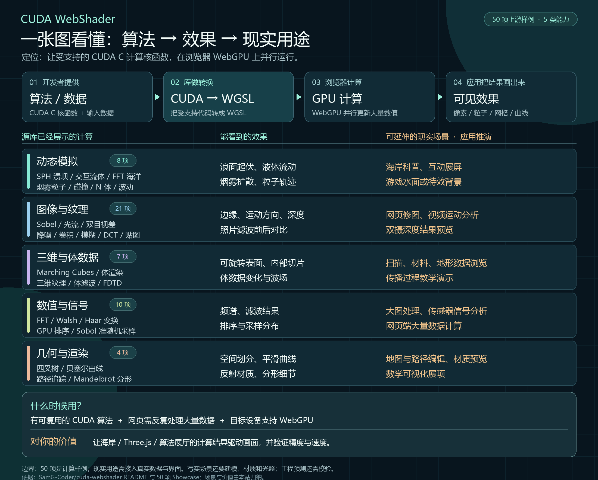

网页能看到哪些结果
上游样例可以显示动态海面、流体与粒子、图像处理前后、三维体数据、路径追踪画面，也能输出排序、频谱和数值结果。本站的 12 个 Canvas 画面与港湾模型只用于解释目标视觉效果，并非此库运行输出。
逐项查看 50 个上游入口 ↗OPEN SOURCE RESEARCH / 011
开发者写计算规则并提供数据；CUDA WebShader 将受支持的 CUDA C 核函数转成浏览器能执行的 WGSL，交给 WebGPU 运行。得到的数值再由应用绘制成粒子、海浪或图像。
海岸作品是作者使用此库制作的独立应用。本站的港湾俯视图是教学模型；上游 50 个样例是不同计算任务的演示。
五类计算覆盖源库的 50 项展示；右列是按输入和结果推演的应用方向。先看总图，再到下方选择你关心的样例。

它是计算转换和运行工具。上游样例展示的是算法执行后的结果；实际产品还需要自己的数据、界面、绘制和验证。
上游样例可以显示动态海面、流体与粒子、图像处理前后、三维体数据、路径追踪画面，也能输出排序、频谱和数值结果。本站的 12 个 Canvas 画面与港湾模型只用于解释目标视觉效果，并非此库运行输出。
逐项查看 50 个上游入口 ↗另有实验性的 CPU/Wasm 后端，用于 GPU 管线准备阶段的过渡；它不是所有样例的默认执行路径。
核对源库目录 ↗动态模拟 8：SPH、FFT 海洋、流体、粒子与 N 体。
图像纹理 21：Sobel、光流、视差、降噪、卷积与采样。
三维体数据 7：Marching Cubes、体渲染、FDTD。
数值信号 10：FFT、Walsh、Haar、排序与准随机采样。
几何渲染 4：四叉树、贝塞尔、路径追踪与分形。
五类是本站为浏览而做的分组；这些算法由样例代码实现，库本身的核心是转换与调度。
适合已有受支持的 CUDA 核函数，希望让用户在网页反复、大量地计算并立即观察结果：如水体与粒子交互展示、图像处理工具、三维扫描数据浏览、算法教学或原生 CUDA 与网页结果对照。上线前应在目标 WebGPU 设备上核对结果、耗时和兼容性。
从四个真实任务理解输入与输出 ↓每个方向都需要数据接入、用户界面、产品级错误处理和场景验证；这里是可行的研发方向，不是现成应用。
Three.js 负责把结果画出来；海岸与算法实验提供可计算的水位、流速或粒子状态；CUDA WebShader 提供把合适的 CUDA 计算接到浏览器 GPU 的路线。先选一个粒子输运或高度场更新内核，用相同输入比较当前实现、手写 WGSL 与转换版的数值和速度，再决定是否采用。
查看这条实验路线 ↓它让已有的 CUDA 计算逻辑有机会在浏览器 GPU 上执行。你看到的画面，还需要应用把计算结果绘出来。
例如：每个水面格子下一刻的水位怎么算，初始地形和浪强是多少。
把受支持的 CUDA 核函数转成 WGSL，建立 WebGPU 计算任务，让 GPU 更新数值。
Three.js 等读取水位、粒子位置或像素结果，再加地形、材质、光照和相机。
水位更新公式由开发者写；库负责让它在浏览器 GPU 上反复计算；绘制程序把高度变成水面。白沫、反光、岩石和视角由场景代码继续完成。
能力边界：需要提供符合该项目支持范围的 CUDA 核函数、输入数据和运行安排。它不会自行设计物理公式或自动生成写实场景；任意 CUDA 工程也不能直接整包移入浏览器。查看上游支持范围 ↗
接下来按实际任务看怎么用 ↓每个案例都从真实输入开始，经过浏览器 GPU 计算，再交给网页呈现。下方链接可查看相关的上游运行样例。
这些案例如何落地：上游样例证明相关计算可在浏览器运行；完整应用还要接入自己的数据、参数控件和画面设计。本站港湾教学图和十二个算法画面由 JavaScript Canvas 制作，用来说明目标效果，并非该库的运行结果。
这是作者基于 CUDA WebShader 制作的三维海岸作品：浪头绕过岩石，白沫沿水流扩散，浅水冲上沙滩又退回。画面、地形与光照一起呈现。
推荐在画面下方切换 Rocky Surf、Shoreline 和 Along the Breaker；条件面板可调海况、风向和潮位。首次加载需要一些时间，浏览器需支持 WebGPU。
预览截图来自原版 coastal-simulation，不是 CUDA WebShader 的运行截图。点击后打开作者的 GPU 移植版：它保留原版场景和浅水模型，并加入增强的波浪、泡沫、喷雾和相机控制。浏览器中的跨站嵌入当前未能显示，因此直接进入独立页面。该作品仍是简化浅水模拟与图形表现，不等于实测海岸或工程预测。
用俯视数值图拆开观察入射波、浅水传播、防波堤遮挡、泡沫输运和测点读数。
十二个可直接观看的本地算法样机。先按视觉目标筛选，再进入对应的上游 CUDA/WebGPU 真实样例。
不同频率、振幅和相位的波叠加为海面高度；把数值场画成远近不同的浪线、反光与海岸线。
让示踪粒子沿速度场移动；鼠标扰动流向。适合把水、风或数据流动做成可交互的视觉层。
物体两两施加软化引力，速度与位置逐帧积分；轨迹把运动过程变成空间叙事。
3×3 邻域计算水平和垂直亮度梯度；左侧保留原画面，右侧只显示结构边缘。
采样连续的高度场，在网格边上找等值交点；这是 Marching Cubes 三维网格提取的二维截面原型。
对每个像素迭代复数，按逃逸次数着色；点击画面可向该位置放大，寻找新的边界纹理。
沿每条视线逐步采样三维密度并累积颜色和透明度，让内部结构成为可观看的空间影像。
逐像素求光线与球体、地面的交点，再计算遮挡、直射光和反射；展示金属与磨砂材质的差别。
用低差异序列均匀铺开三维采样点，并投影成可旋转的点云，观察分布中的空隙与聚集。
将信号反复拆成低频平均与高频细节；上方看时域波形，下方看不同尺度的变化系数。
比较交换网络逐阶段重排 64 个数值；颜色标出正在交换的元素，适合观察并行排序过程。
同一张低分辨率图像分别用最近邻和双三次插值放大，直接比较块状边缘与平滑过渡。
两层效果：上方画面是本站用 JavaScript Canvas 实现的轻量算法样机，用于选择目标视觉样式；不是 CUDA WebShader 的运行结果。海洋、流体、网格、路径追踪与准随机序列均采用简化或同类算法。每张卡片的“运行上游”会打开对应的真实 CUDA→WGSL→WebGPU 样例；其余效果可在50 项完整目录查看。
选择样例后按需加载。首次运行可能需要编译着色器；浏览器需支持 WebGPU。
可尝试嵌入上游真实 GPU 画面；若跨站限制导致空白，请在独立窗口运行。
每张卡片保留上游计算内容，再补上可延伸的现实任务和采用时机。应用场景是本站推演，不代表上游已交付完整产品。
阅读方法：“上游计算”来自源库样例；“现实任务”和“什么时候用”是本站根据算法输入输出做的应用推演。点击卡片的“输入与结果”可看还缺哪些应用工作。查看上游样例说明 ↗
没有匹配的样例。换个关键词或选择“全部”。
编译器选取一个 __global__ 核函数和可达的设备辅助函数。核函数之外，JavaScript 仍负责缓冲区、网格规模和多步流程。
线程与块索引转成 WebGPU 调用索引；指针参数变为存储缓冲区，标量参数写入 uniform，共享内存变为 workgroup 内存。
运行时验证 WGSL、建立 compute pipeline 并调度。粒子等样例让 Three.js 读取同一 GPU 缓冲区，普通帧无需下载位置到 CPU。
这是一套有边界的 CUDA C 子集编译器。任意 CUDA 工程、CUDA 库和张量核心不会自动移植；部分数据布局、同步与设备限制会被拒绝或需要重新设计。Three.js 缓冲区桥接依赖固定的 r186 内部接口。
查看上游支持范围 ↗以下是上游 2026 年 9 月在 RTX 5080 上公布的结果。本页没有在你的设备上重复性能测试。
浏览器 GPU 数值与渲染测试通过
10 类核函数 × 2 种规模完成两端数值验证
粒子样例的默认实时画面规模
大规模工况，单位为 GPU 微秒。数字越小越快；计时排除了编译、初次上传和读回。
| 计算 | WebGPU | CUDA Graph | 观察 |
|---|---|---|---|
| SAXPY · 419 万元素 | 16.26 | 16.16 | 接近 |
| 分块矩阵乘 · 512² | 64.26 | 63.08 | 接近 |
| 朴素矩阵乘 · 512² | 231.42 | 107.18 | WebGPU 较慢 |
| 粒子更新 · 26 万 | 4.51 | 4.93 | 本次接近 |
这些是特定设备、特定核函数的批量 GPU 计时，不代表应用帧率或跨设备的普遍结论。阅读完整的 20 工况报告 ↗
你的 Three.js 研究关注三维呈现，算法与场景实验室关注水体等模型的因果。这个库展示两者如何通过 GPU 缓冲区接在一起：算法计算状态，画面直接读取状态。
最合适的下一步是挑一个边界清楚的粒子输运或高度场更新，以相同输入比较现有实现和 WebGPU 版本的数值、画面与目标设备耗时。已有算法若仅用 JavaScript/Wasm，直接编写 WGSL 也值得比较。